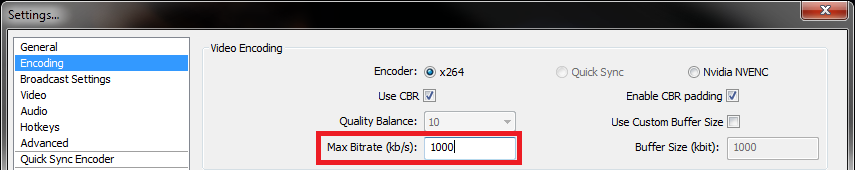
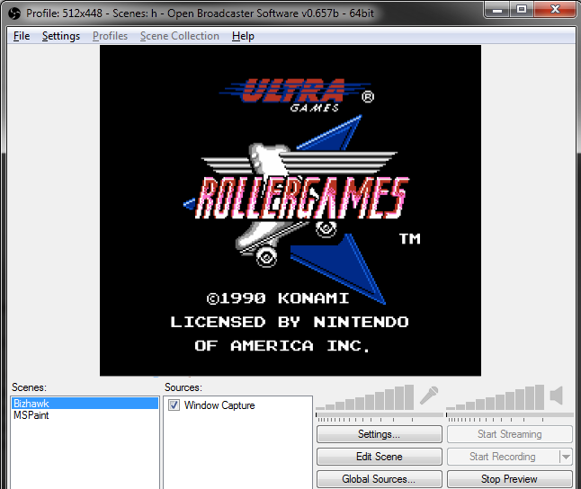

Hey you must've been invited to the show! This guide will cover every little detail of getting your OBS in top shape for the broadcast. Feel free to ask me questions if you're having trouble.
Note: if you're a savvy OBS user, you won't need this guide. Here is everything you need, summed up: Set your broadcast to "Custom Server" with the FMS URL: rtmp://arcadepit.us/ap (I will give you the path/stream key when we start). Set your resolution to 512x448, FPS: 60, Bitrate: 1000. No need to stream audio or mic, discord will do that part. Create scenes for both Bizhawk and mspaint (window capture for Bizhawk). Make sure you have the most recent Challenge pack.
Everyone will need this open as well, the show viewer: Arcade Pit Viewer. This will let you view everyone in real time. My screen will be the 5th one, mute everyone but me (don't worry, my audio is all set up for no echo).
If you need more details or don't know how to use OBS, the information below has step-by-step instructions.
Bizhawk is an all-in-one emulator and should handle every game we use. I've tried to streamline this configuration as much as possible.
Controls will need checked for each console. You have to load some game from each console to do that. It's possible that they are already set for you, but you should double-check!
You should also make sure that the states are being found correctly. Open Batman on the NES, Press 1 (to choose state 1) followed by 'p' and it should load the first state. If this works, you're in good shape. If not, make sure everything was unzipped properly.
Display settings are under 'Config' -> 'Display'. Hopefully, the res is being forced to be 1024 x 896. This will make it much easier to capture. If this setting didn't transfer over properly, you can put it in under custom size. If you're adjusting the screen size, use a multiplier like 2x or 3x from the view options.
If you already use OBS, then you probably won't want to mess with your existing settings. So the first thing we will do is make a new scene and profile which you can delete later. If you just installed OBS, skip this step.
Now we don't have to worry about losing your settings. You can switch back to your old profile and scene collection after the show.
Open up your broadcast settings by going to 'Settings' -> 'Settings', and choose 'Encoding' on the left. Set the max bitrate to 1000.
Go down the list on the left to 'Broadcast Settings' where you will be entering the information for my private server. We use my own server because we need to operate with no delay. Change the following things:
The final setting is on the 'Video' section on the left.
Hey, we're nearly done now! The complicated part is over. Now we just need to get the scenes made.
Back in the main section of OBS, you should see two white boxes on the bottom-left. One says 'Scenes' and the other, 'Sources.' You should already have 1 scene. Right-click on the white box and add 1 more. Rename them to: Bizhawk, MSPaint.
Okay, now let's make sure everything looks right. Click the 'Preview Stream' button on the bottom right and whatever scene you're selecting should show up. You can switch them on the fly by selecting them below.
The easiest way to get them to fit the screen properly is to click on the source and press Ctrl-F. It should fit to screen. If not, you can force it to size by clicking 'Edit Scene.' This will let you drag it around directly in the preview window, and resize it too. MSPaint is the one you want only canvas for, so you'll have to do this to get that one to look good.
You don't need to stream audio, so just click on that red mic and red speaker icon to disable them. Ultimately, your OBS should look like this!
Lastly, there is the matter of the show viewer itself: Arcade Pit Viewer. This will let you watch everyone in nearly real-time. My screen will be the 5th one, mute everyone but me (don't worry, my audio is all set up for no echo).
That's everything! This was long-winded but it really comes down to a handful of settings. Again, I can go over anything with you if you need help. Thanks!